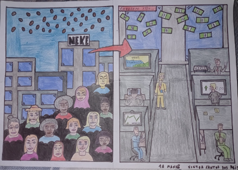
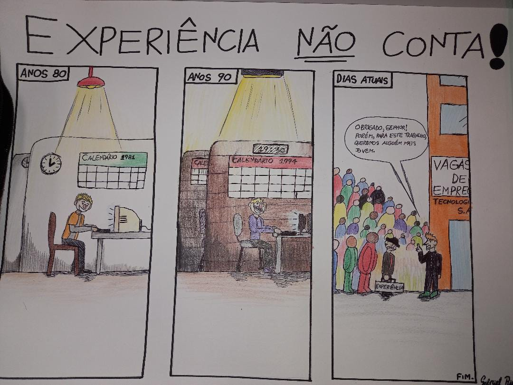
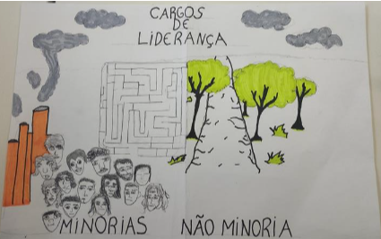

Charges e Tirinhas

Operários (Tarsila do Amaral)
Victor Santos dos Reis
Eu fiz essa charge inspirada em uma notícia do site CUT, na qual é mostrada a insatisfação da mulher no mercado de trabalho, em que elas não têm as mesmas oportunidades de emprego dos homens, possuindo salários mais baixos, e também, são as primeiras a serem demitidas de seus empregos.
Coloquei diversos elementos em minha charge, como, as mulheres fora das empresas e os homens trabalhando dentro dessas, representando as oportunidades entre os gêneros e o alto número de mulheres desempregadas atualmente. No primeiro quadro, eu retrato personagens mulheres e uma chuva de moedas, enquanto no segundo quadro retrato homens e uma chuva de notas de dinheiro. As duas espécies do dinheiro simbolizam a diferença salarial entre o homem e a mulher.
Agora comparando a charge com a obra Operários, feita pela pintora brasileira Tarsila do Amaral, priorizei o elemento principal da obra, a organização das pessoas, estando em uma espécie de escada. Optei por retratar empresas no fundo, o que na obra Operários, são fábricas e indústrias, que são tendências do mercado e da economia na época. Na pintura ela se apropria de cores mais foscas, então na minha charge tentei ao máximo evitar cores vibrantes, tentando transmitir uma ideia da dificuldade que aquelas mulheres estavam passando, até nos dias atuais, sendo de certa forma um momento difícil de suas vidas, e que deve ser levado a sério.
Gabriel Ribeiro Almeida
Meu processo criativo acerca da tirinha que fiz começou a partir da notícia que pesquisei, onde o assunto abordado era a dificuldades de idosos se inserirem no mercado de trabalho tecnológico. Então, após uma breve pesquisa, pensei que seria mais adequado para o tema, fazer uma tirinha, em vez de um cartum ou de uma charge por exemplo.
Então, comecei a pensar sobre a história e, sendo sincero, esta foi a etapa mais fácil para mim, pois assim que me deparei com a notícia, já comecei a estruturar um roteiro na minha mente. A parte mais “complicada” (se é que podemos dizer isso), foi decidir qual seria a fala do personagem do último quadrinho.
Depois disso, por último, parti para o design, tanto dos personagens, como do cenário como um todo. Optei por um design mais simples, pois concluí que esse tipo de traço seria mais apropriado para contar a história da tirinha.
Bernardo Bassam Biazeto
O meu trabalho sobre a releitura da obra “Operários” da Tarsila Amaral foi um trabalho baseado numa notícia...
E pra retratar isso eu botei os mesmos operários da obra pra representar a minoria da população trabalhista e em sua frente fiz um labirinto que representa as dificuldades que as minorias enfrentam, como o preconceito, racismo, machismo, etc.
No caminho da não minoria eu coloquei uma passarela florida e com árvores para representar um caminho normal, com facilidades e sem interrupções.
Na obra da Tarsila as pessoas que foram desenhadas tem expressões amenas e sem emoções, isso quer dizer que as pessoas estão cansadas do trabalho nas fabricas que são representadas atrás. Eu representei isso no meu trabalho.